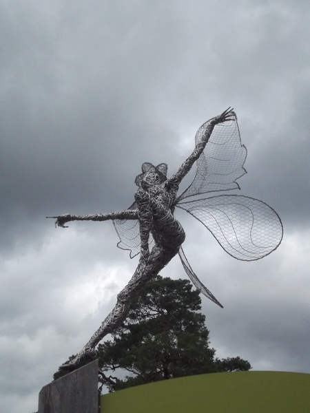

Genova has white and black hair, she usually has it half up and half down. She has purple eyes and lines on her face. She is the most youngest member of the most important family of Eelpea. The reasons they are so important is because they're the family who supports the magic in Eelpea and is the only people who can have multiple ablilities. The Thing about Genova is that she is the only one in her family who was born with purple eyes and born with no power. But this is known until she turns 18. Once she turns 18 she gains the most strongest power in all of Eelpea.
 Statue of An Alson